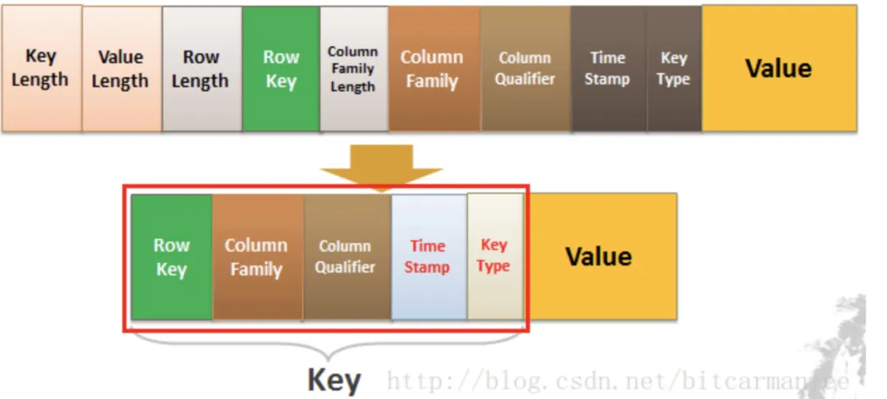

HBase介绍
简介
Apache HBase 是 Hadoop 数据库，一个分布式、可伸缩的大数据存储。
HBase是依赖Hadoop的。为什么HBase能存储海量的数据？因为HBase是在HDFS的基础之上构建的，HDFS是分布式文件系统。
你可以把HBase当做是MySQL，把HDFS当做是硬盘。HBase只是一个NoSQL数据库，把数据存在HDFS上。
那我们为啥要用HBase呢？HBase在HDFS之上提供了高并发的随机写和支持实时查询，这是HDFS不具备的。HBase可以以低成本来存储海量的数据并且支持高并发随机写和实时查询。
HBase还有一个特点就是：存储数据的”结构“可以地非常灵活（这个下面会讲到，这里如果没接触过HBase的同学可能不知道什么意思）。
听过HBase的同学可能都听过「列式存储」这个词。我最开始的时候觉得HBase很难理解，就因为它这个「列式存储」我一直理解不了它为什么是「列式」的。
在网上也有很多的博客去讲解什么是「列式」存储，它们会举我们现有的数据库，比如MySQL。存储的结构我们很容易看懂，就是一行一行数据。
转换成所谓的列式存储是什么样的呢？无非就是把每列抽出来，然后关联上Id。这个叫列式存储吗？我在这打个问号。
转换后的数据从我的角度来看，数据还是一行一行的。
这样做有什么好处吗？很明显以前我们一行记录多个属性(列)，有部分的列是空缺的，但是我们还是需要空间去存储。现在把这些列全部拆开，有什么我们就存什么，这样空间就能被我们充分利用。
这种形式的数据更像什么？明显是Key-Value嘛。那我们该怎么理解HBase所谓的列式存储和Key-Value结构呢？
数据模型
在看HBase数据模型的时候，最好还是不要用「关系型数据库」的知识去理解它。
In HBase, data is stored in tables, which have rows and columns. This is a terminology overlap withrelational databases (RDBMSs), but this is not a helpful analogy.
概念
HBase里边也有表、行和列的概念。
- 表没什么好说的，就是一张表
- 一行数据由一个行键和一个或多个相关的列以及它的值所组成
好了，现在比较抽象了。在HBase里边，定位一行数据会有一个唯一的值，这个叫做行键(RowKey)。而在HBase的列不是我们在关系型数据库所想象中的列。
HBase的列（Column）都得归属到列族（Column Family）中。在HBase中用列修饰符（Column Qualifier）来标识每个列。
在HBase里边，先有列族，后有列。
什么是列族？可以简单理解为：列的属性类别
什么是列修饰符？先有列族后有列，在列族下用列修饰符来标识一列。

再放点具体的值：

这张表我们有两个列族，分别是UserInfo和OrderInfo。在UserInfo下有两个列，分别是UserInfo:name和UserInfo:age，在OrderInfo下有两个列，分别是OrderInfo:orderId和OrderInfo:money。
UserInfo:name的值为：三歪。UserInfo:age的值为24。OrderInfo:orderId的值为23333。OrderInfo:money的值为30。这些数据的主键(RowKey)为1。
上面的那个图看起来可能不太好懂：

HBase表的每一行中，列的组成都是灵活的，行与行之间的列不需要相同。如图下：


换句话说：一个列族下可以任意添加列，不受任何限制
数据写到HBase的时候都会被记录一个时间戳，这个时间戳被我们当做一个版本。比如说，我们修改或者删除某一条的时候，本质上是往里边新增一条数据，记录的版本加一了而已。
比如现在我们有一条记录：
现在要把这条记录的值改为40，实际上就是多添加一条记录，在读的时候按照时间戳读最新的记录。在外界「看起来」就是把这条记录改了。
Key-Value
HBase本质上其实就是Key-Value的数据库，上一次我们学Key-Value数据库还是Redis呢。那在HBase里边，Key是什么？Value是什么？
我们看一下下面的HBaseKey-Value结构图：

Key由RowKey(行键)+ColumnFamily（列族）+Column Qualifier（列修饰符）+TimeStamp（时间戳–版本）+KeyType（类型）组成，而Value就是实际上的值。
对比上面的例子，其实很好理解，因为我们修改一条数据其实上是在原来的基础上增加一个版本的，那我们要准确定位一条数据，那就得（RowKey+Column+时间戳）。
KeyType是什么？我们上面只说了「修改」的情况，你们有没有想过，如果要删除一条数据怎么做？实际上也是增加一条记录，只不过我们在KeyType里边设置为 Delete 就可以了。
架构
扯了这么一大堆，已经说了HBase的数据模型和Key-Value了，我们还有一个问题：「为什么经常会有人说HBase是列式存储呢？」
其实HBase更多的是「列族存储」，要谈列族存储，就得先了解了解HBase的架构是怎么样的。
我们先来看看HBase的架构图：

Client客户端，它提供了访问HBase的接口，并且维护了对应的cache来加速HBase的访问。
Zookeeper存储HBase的元数据（meta表），无论是读还是写数据，都是去Zookeeper里边拿到meta元数据告诉给客户端去哪台机器读写数据
HRegionServer它是处理客户端的读写请求，负责与HDFS底层交互，是真正干活的节点。
总结大致的流程就是：client请求到Zookeeper，然后Zookeeper返回HRegionServer地址给client，client得到Zookeeper返回的地址去请求HRegionServer，HRegionServer读写数据后返回给client。

HRegionServer
我们来看下面的图：
前面也提到了，HBase可以存储海量的数据，HBase是分布式的。所以我们可以断定：HBase一张表的数据会分到多台机器上的。那HBase是怎么切割一张表的数据的呢？用的就是RowKey来切分，其实就是表的横向切割。

说白了就是一个HRegion上，存储HBase表的一部分数据。
HRegion下面有Store，那Store是什么呢？我们前面也说过，一个HBase表首先要定义列族，然后列是在列族之下的，列可以随意添加。
一个列族的数据是存储在一起的，所以一个列族的数据是存储在一个Store里边的。
看到这里，其实我们可以认为HBase是基于列族存储的（毕竟物理存储，一个列族是存储到同一个Store里的）
Store里边有啥？有Mem Store、Store File、HFile，我们再来看看里边都代表啥含义。
HBase在写数据的时候，会先写到Mem Store，当MemStore超过一定阈值，就会将内存中的数据刷写到硬盘上，形成StoreFile，而StoreFile底层是以HFile的格式保存，HFile是HBase中KeyValue数据的存储格式。
所以说：Mem Store我们可以理解为内存 buffer，HFile是HBase实际存储的数据格式，而StoreFile只是HBase里的一个名字。
回到HRegionServer上，我们还漏了一块，就是HLog。
这里其实特别好理解了，我们写数据的时候是先写到内存的，为了防止机器宕机，内存的数据没刷到磁盘中就挂了。我们在写Mem store的时候还会写一份HLog。
这个HLog是顺序写到磁盘的，所以速度还是挺快的（是不是有似曾相似的感觉）…
稍微总结一把：
- HRegionServer是真正干活的机器（用于与hdfs交互），我们HBase表用RowKey来横向切分表
- HRegion里边会有多个Store，每个Store其实就是一个列族的数据（所以我们可以说HBase是基于列族存储的）
- Store里边有Men Store和StoreFile(HFile)，其实就是先走一层内存，然后再刷到磁盘的结构
HMaster
我们在上面的图会看到有个Hmaster，它在HBase的架构中承担一种什么样的角色呢？读写请求都没经过Hmaster呀。
HMasteris the implementation of the Master Server. The Master server is responsible for monitoring all RegionServer instances in the cluster, and is the interface for all metadata changes.
HMaster会处理 HRegion 的分配或转移。如果我们HRegion的数据量太大的话，HMaster会对拆分后的Region重新分配RegionServer。（如果发现失效的HRegion，也会将失效的HRegion分配到正常的HRegionServer中）
HMaster会处理元数据的变更和监控RegionServer的状态。
RowKey设计
我们已经知道RowKey是什么了。不难理解的是，我们肯定是要保证RowKey是唯一的，毕竟它是行键，有了它我们才可以唯一标识一条数据的。
在HBase里边提供了三种的查询方式：
- 全局扫描
- 根据一个RowKey进行查询
- 根据RowKey过滤的范围查询
根据一个RowKey查询
首先我们要知道的是RowKey是会按字典序排序的，我们HBase表会用RowKey来横向切分表。
无论是读和写我们都是用RowKey去定位到HRegion，然后找到HRegionServer。这里有一个很关键的问题：那我怎么知道这个RowKey是在这个HRegion上的？
HRegion上有两个很重要的属性：start-key和end-key。
我们在定位HRegionServer的时候，实际上就是定位我们这个RowKey在不在这个HRegion的start-key和end-key范围之内，如果在，说明我们就找到了。
这个时候会带来一个问题：由于我们的RowKey是以字典序排序的，如果我们对RowKey没有做任何处理，那就有可能存在热点数据的问题。
举个例子，现在我们的RowKey如下：
1 | java3y111 |
Java3yxxx开头的RowKey很多，而其他的RowKey很少。如果我们有多个HRegion的话，那么存储Java3yxxx的HRegion的数据量是最大的，而分配给其他的HRegion数量是很少的。
关键是我们的查询也几乎都是以java3yxxx的数据去查，这会导致某部分数据会集中在某台HRegionServer上存储以及查询，而其他的HRegionServer却很空闲。
如果是这种情况，我们要做的是什么？对RowKey散列就好了，那分配到HRegion的时候就比较均匀，少了热点的问题。
HBase优化手册：
建表申请时的预分区设置，对于经常使用HBase的小伙伴来说,HBase管理平台里申请HBase表流程必然不陌生了。
‘给定split的RowKey组例如:aaaaa,bbbbb,ccccc;或给定例如:startKey=00000000,endKey=xxxxxxxx,regionsNum=x‘
第一种方式:
是自己指定RowKey的分割点来划分region个数.比如有一组数据RowKey为[1,2,3,4,5,6,7],此时给定split RowKey是3,6,那么就会划分为[1,3),[3,6),[6,7)的三个初始region了.如果对于RowKey的组成及数据分布非常清楚的话,可以使用这种方式精确预分区.
第二种方式 :
如果只是知道RowKey的组成大致的范围,可以选用这种方式让集群来均衡预分区,设定始末的RowKey,以及根据数据量给定大致的region数,一般建议region数最多不要超过集群的rs节点数,过多region数不但不能增加表访问性能,反而会增加master节点压力.如果给定始末RowKey范围与实际偏差较大的话,还是比较容易产生数据热点问题.
最后:生成RowKey时,尽量进行加盐或者哈希的处理,这样很大程度上可以缓解数据热点问题.
根据RowKey范围查询
上面的情况是针对通过RowKey单个查询的业务的，如果我们是根据RowKey范围查询的，那没必要上面那样做。
HBase将RowKey设计为字典序排序，如果不做限制，那很可能类似的RowKey存储在同一个HRegion中。那我正好有这个场景上的业务，那我查询的时候不是快多了吗？在同一个HRegion就可以拿到我想要的数据了。
举个例子：我们会间隔几秒就采集直播间热度，将这份数据写到HBase中，然后业务方经常要把主播的一段时间内的热度给查询出来。
我设计好的RowKey，将该主播的一段时间内的热度都写到同一个HRegion上，拉取的时候只要访问一个HRegionServer就可以得到全部我想要的数据了，那查询的速度就快很多。
总结
- HBase是一个NoSQL数据库，一般我们用它来存储海量的数据（因为它基于HDFS分布式文件系统上构建的）
- HBase的一行记录由一个RowKey和一个或多个的列以及它的值所组成。先有列族后有列，列可以随意添加。
- HBase的增删改记录都有「版本」，默认以时间戳的方式实现。
- RowKey的设计如果没有特殊的业务性，最好设计为散列的，这样避免热点数据分布在同一个HRegionServer中。
- HBase的读写都经过Zookeeper去拉取meta数据，定位到对应的HRegion，然后找到HRegionServer